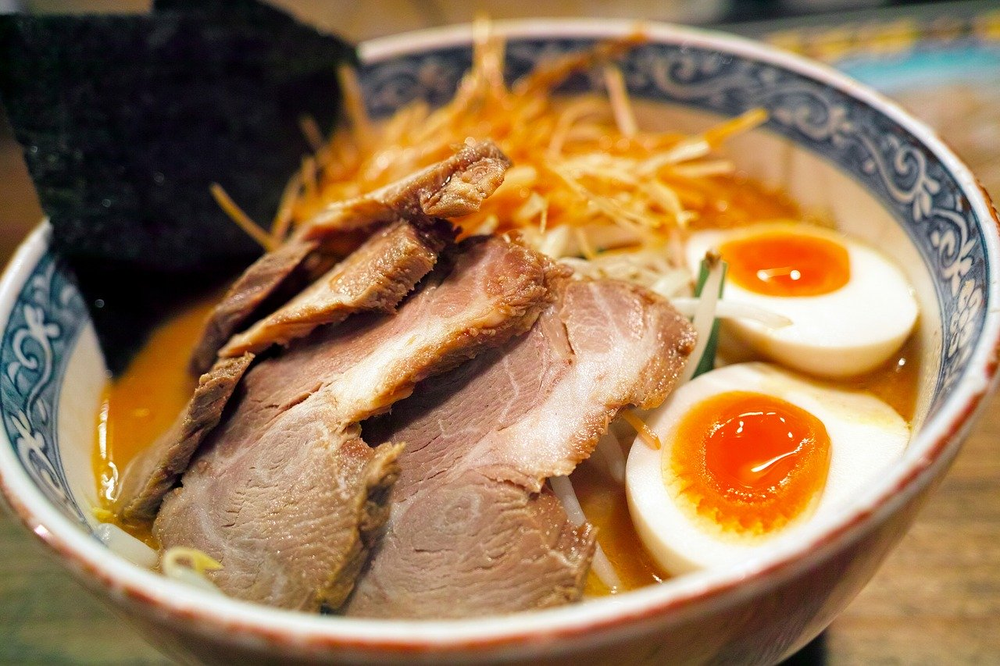

幻のラーメン
1日に20食限定の「幻のラーメン」です。
11時の開店に間に合わせてお店へ出向いても、既に長蛇の列。めったに口にすることができないと言われています。
列の先頭の方に何時から並んでいるのか伺ったところ、「1週間前かなぁ？」という返答がありました。正直なところ、そこまでして食べなければならないラーメンって、筆者は思いました。
その方に更に伺ったところ、一度食べるとその味を忘れることができす、また食べたくなるとのことです。ですので、そこまでしてまでも食べたくなるわけです。
関西各地の美味しいラーメンを紹介します
1日に20食限定の「幻のラーメン」です。
11時の開店に間に合わせてお店へ出向いても、既に長蛇の列。めったに口にすることができないと言われています。
列の先頭の方に何時から並んでいるのか伺ったところ、「1週間前かなぁ？」という返答がありました。正直なところ、そこまでして食べなければならないラーメンって、筆者は思いました。
その方に更に伺ったところ、一度食べるとその味を忘れることができす、また食べたくなるとのことです。ですので、そこまでしてまでも食べたくなるわけです。